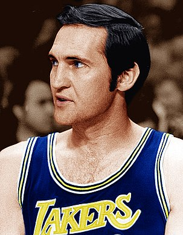
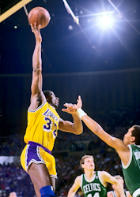
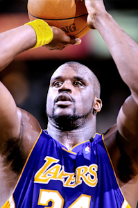
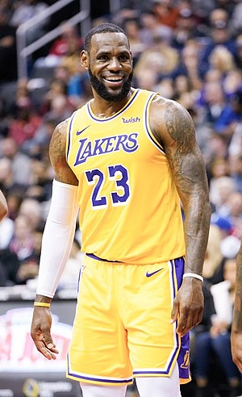

Zespół powstał w 1946 w Detroit pod nazwą Detroit Gems. Występował przez jeden sezon w lidze National Basketball League (Stany Zjednoczone) i osiągnął fatalny bilans 4-40. W 1947 klub został sprzedany, a nowi właściciele przenieśli go do Minneapolis. Tam otrzymał nową nazwę – Lakers od nazwy stanu Minnesota – „Krainy 10 000 jezior”. Jako najgorszy w lidze, klub miał pierwsze miejsce w drafcie 1947 i skorzystał z tego, wybierając centra George’a Mikana. Mikan i nowy trener John Kundla poprowadzili zespół do mistrzostwa już w pierwszym roku po przenosinach. W następnym sezonie drużyna przeniosła się do ligi BAA, gdzie także zdobyła mistrzostwo. Liga BAA rok później przekształciła się w NBA, więc mistrzostwo z 1949 liczy się jako pierwsze w historii Lakers. W nowej lidze zespół, prowadzony przez Mikana, Verna Mikkelsena i Jima Pollarda, zdobył cztery następne tytuły: w latach 1950 oraz 1952/1954. 22 listopada 1950 mecz Lakers z Fort Wayne Pistons zakończył się najniższym wynikiem w historii ligi: 19 – 18. Nowe przepisy (24-sekundowy czas na rzut, limit 6 fauli) oraz zakończenie kariery przez Mikana ograniczyły dominację Lakers, w sezonie 1956/1957 zespół zajął nawet ostatnie miejsce w lidze. Efektem był jednak pierwsze miejsce w drafcie i znów bardzo trafny wybór skrzydłowego Elgina Baylora. Nowy zawodnik, wraz z Mikkelsenem, ożywił zespół, który znów wystąpił w finałach. Tam przegrał z, wchodzącymi na mistrzowską ścieżkę, Boston Celtics, rozpoczynając wieloletnią rywalizację obu zespołów.
 W 1960, aby uratować finanse, poważnie nadwątlone po odejściu George’a Mikana, drużyna przeniosła się do Los Angeles. Jednocześnie przybył następny wielki gracz – obrońca Jerry West. Lakers wciąż osiągali sukcesy, ale przez całą dekadę nie mogli zdobyć mistrzostwa, powstrzymywani przez niepokonanych Celtów. W 1965 do zespołu dołączył Gail Goodrich, a w 1968 Wilt Chamberlain, który miał powstrzymać Billa Russella. Bez powodzenia – Lakers grali w latach 60. w siedmiu z dziewięciu kolejnych finałów, ale wszystkie przegrali. W finałach 1969 MVP został Jerry West – jedyny raz w historii, kiedy tytuł trafił do rąk zawodnika przegranej drużyny. W 1971 na emeryturę odszedł filar zespołu Elgin Baylor, a nowym trenerem został Bill Sharman. Pod jego kierownictwem zespół osiągnął historyczny wynik – na przełomie lat 1971–1972 odniósł kolejne 33 zwycięstwa – do dziś najwięcej w historii wszystkich amerykańskich lig zawodowych. Sezon skończył się również rekordowym bilansem 69-13, a rok uwieńczyło upragnione mistrzostwo, pierwsze od 18 lat. Po następnym finale, przegranym z New York Knicks, zespół opuścił następny wielki gracz – Wilt Chamberlain. Dwa lata później znalazł się jego następca – trzykrotny MVP ligi, Kareem Abdul-Jabbar. W nowej drużynie Jabbar zdobędzie następne trzy tytuły najwartościowszego gracza ligi.
 W 1979 właścicielem Lakers został Jerry Buss, a do zespołu trafiła następna wielka gwiazda, Magic Johnson. Już w pierwszym roku Magic poprowadził Lakersów do tytułu mistrza NBA, pierwszego, ale nie ostatniego w latach 80., a sam zdobył swój pierwszy tytuł MVP finałów. W 1982 trenerem został niedawny gracz, Pat Riley, który doprowadził zespół do mistrzowskiego tytułu w pierwszym roku swojej pracy. Był to zarazem pierwszy z czterech występów w finałach ligi z rzędu, kolejny tytuł Lakers zdobyli w 1985 Po roku przerwy w występach finałowych Jeziorowcy wrócili w 1987, silniejsi niż kiedykolwiek, zdobywając dwa tytuły z rzędu. Drużynę tę ocenia się jako jeden z najsilniejszych teamów wszech czasów, w składzie którego występowali: Magic Johnson, James Worthy, Kareem Abdul-Jabbar, Michael Cooper, Byron Scott, A.C. Green, Mychal Thompson i Kurt Rambis. Lansowany przez nich „Showtime” do dziś pozostaje wzorem radosnej, ofensywnej i efektownej, a zarazem skutecznej gry dla wielu zespołów NBA. W tym czasie Magic trzykrotnie został wybrany MVP ligi oraz trzykrotnie MVP finałów. Następny rok, szumnie zapowiadany jako „Three-peat” (skrót od three repeat), przyniósł jednak porażkę w finałach z Detroit Pistons i koniec kariery Abdul-Jabbara. Po następnej klęsce, w play-offach 1990 z Phoenix Suns, Riley zrezygnował z prowadzenia zespołu. Paradoksalnie, otrzymał wtedy swój pierwszy tytuł trenera roku. Nowym centrem został Serb – Vlade Divac, a trenerem Mike Dunleavy. W 1991 Magic Johnson zaszokował świat, oznajmiając o swoim zakażeniu wirusem HIV i przedwczesnym zakończeniu kariery sportowej. Zespół nie mógł podnieść się po odejściu swych frontmanów przez połowę dekady. Nie pomagały nawet desperacki kroki, jak zatrudnienie Magica na stanowisku trenera. Jasne punkty w tym okresie to sezon 1994/1995, kiedy pod wodzą Dela Harrisa zespół dotarł do finału konferencji, przynosząc swemu trenerowi tytuł coacha roku, a menedżerowi Jerry’emu Westowi tytuł menedżera roku.
  Właśnie Jerry West w następnym roku wykonał dwa ruchy, które przywróciły wielkość zespołowi: zatrudnił perspektywicznego centra Shaquille’a O’Neala, oraz wymienił Divaca za 18-letniego rzucającego obrońcę Kobego Bryanta. Jako jedyna drużyna w lidze Lakers nie mieli wtedy gracza powyżej 30 roku życia. Młody zespół, mający w składzie m.in. Roberta Horry’ego, Dereka Fishera i Ricka Foksa, odnosił umiarkowane sukcesy w play-offach. W 1999 do drużyny dołączyli Glen Rice i, na krótko, charyzmatyczny Dennis Rodman, ale decydująca zmiana przyszła rok później, z zatrudnieniem na stanowisku trenera Phila Jacksona. W nowej hali Staples Center Lakers zdominowali ligę w nowym millenium. Zdobyli kolejne trzy tytuły mistrzowskie z rzędu, w latach 2000–2002, a O’Neal trzykrotnie otrzymał tytuł MVP finałów, w 2000 dokładając tytuł MVP ligi i MVP Meczu Gwiazd. Phil Jackson zdobywając dziewiąty tytuł mistrza w ciągu dwunastu lat, dogonił legendarnego Reda Auerbacha. Oprócz wymienionych w mistrzowskiej drużynie prym wiedli Ron Harper i Brian Shaw, a po jednym sezonie zaliczyli weterani: John Salley, A.C. Green, Horace Grant i Mitch Richmond.
Następne lata to schyłek potęgi Lakersów, spowodowany w dużej mierze gwiazdorskimi kaprysami liderów. Mimo pozyskania takich gwiazd jak Karl Malone czy Gary Payton, zespół nie osiągnął niczego ponad mistrzostwo konferencji i przegrany finał w 2004. Po tym sezonie zespół opuścili Phil Jackson i Shaquille O’Neal, a efektem było niezakwalifikowanie się do fazy play-off. Kolejne sezony, mimo powrotu Phila Jacksona, to właściwie tylko indywidualne popisy Kobego Bryanta, które jednak nie dawały niczego zespołowi.
Dopiero sezon 2007/08 przyniósł pozytywne zmiany. Pozyskano młodego centra z Hiszpanii Pau Gasola, a Kobe Bryant stał się prawdziwym liderem zespołu. Swoją grą zasłużył na pierwszy w karierze tytuł MVP NBA, ale drużyna przegrała w finałach ze znakomitymi Boston Celtics. W sezonie 2008/09 Lakers skończyli sezon zasadniczy z bilansem 65-17 i tym samym zajęli pierwsze miejsce w Konferencji Zachodniej. Po zwycięstwie nad Utah Jazz w pierwszej rundzie playoffów 4-1, drużyna z Los Angeles potrzebowała aż siedmiu meczów żeby zwyciężyć z Houston Rockets i sześciu aby pokonać Denver Nuggets w finale Konferencji Zachodniej. W finałach NBA drużyna wygrała w pięciu meczach z Orlando Magic i tym samym zdobyła mistrzostwo NBA piętnasty raz w swojej historii. Kobe Bryant zdobył tytuł MVP finałów. W sezonie 2009/10 Lakers w finałach ponownie zmierzyli się z Celtics – w siedmiomeczowej serii Lakers ostatecznie zwyciężyli 4:3, zdobywając swoje 16. mistrzostwo NBA. Tytuł MVP finałów ponownie zdobył Kobe Bryant. Dla coacha Phila Jacksona były to kolejne, dziesiąty i jedenasty, pierścienie mistrzowskie, co uczyniło go najbardziej utytułowanym trenerem w historii NBA.
W kolejnym sezonie Lakers zakończyli sezon na drugim miejscu w konferencji. W pierwszej rundzie play-offów, Lakers spotkali się z New Orleans Hornets i pokonali ich 4-2[11]. Jednak ich droga po kolejne mistrzostwo została przerwana w kolejnej rundzie przez przyszłych mistrzów, Dallas Mavericks, którzy pokonali ich 4-0[12]. W przerwie międzysezonowej ze stanowiska trenera odszedł Phil Jackson, a na jego miejscu pojawił się młody coach, Mike Brown[13]. W związku z zablokowaną przez komisarza NBA, Davida Sterna wymianą Chrisa Paula do Lakers[14], z zespołu odszedł też najlepszy rezerwowy poprzedniego sezonu, Lamar Odom[15]. Lakers, po zakończeniu sezonu na trzecim miejscu, natrafili w pierwszej rundzie na Denver Nuggets. Po czterech meczach, prowadząc 3-1[16], Lakers przegrali kolejne dwa, wyrównując stan serii 3-3[17]. Zdołali jednak wygrać mecz nr 7 i awansowali do półfinałów Konferencji Zachodniej[18], gdzie czekali na nich Oklahoma City Thunder. Mimo bardzo dobrej postawy Bryanta, który w tej serii zdobywał średnio 31,2 punktu na mecz, Lakers udało się ostatecznie wygrać tylko jedno spotkanie, odpadając ponownie w drugiej rundzie play-offów[19].
Po zakończeniu kolejnego nieudanego sezonu nic w obozie Lakers nie wskazywało na poważne zmiany kadrowe. Brak środków potrzebnych do zaangażowania najlepszych wolnych agentów na rynku oraz zawodników, którzy mogliby być atrakcyjni w wymianie z innym zespołem wskazywało na to, że Lakers przystąpią do sezonu 2012/2013 z jedynie kosmetycznymi zmianami w składzie. Wbrew tym oczekiwaniom, już 11 czerwca 2012 roku, Lakers pozyskali na zasadzie sign-and-trade 38-letniego wybitnego rozgrywającego Phoenix Suns, Steve’a Nasha[20]. W zamian do klubu z Arizony powędrowały przyszłe wybory w drafcie należące do Lakers. W dniu 10 sierpnia, w wymianie obejmującej również Denver Nuggets oraz Philadelphia 76ers, do Lakers trafił również gwiazdor Orlando Magic – Dwight Howard[21]. Uzupełnienie składu podpisanymi jako wolni agenci Jodie Meeksem[22] oraz Antawnem Jamisonem[23] sprawiło, że Lakers zostali okrzyknięci głównym, obok broniących tytułu Miami Heat, faworytem do zdobycia mistrzostwa w 2013 roku. Trenerem początkowo był Mike Brown, ale wkrótce zastąpił go Mike D’Antoni. Sezon okazał się jednak dość przeciętny, drużyna zakończyła go bilansem 45-37. Lakers startując z 7. miejsca w play-offach zostali zdecydowanie pokonani przez San Antonio Spurs w pierwszej rundzie. 18 lutego 2013 zmarł w wieku 80 lat właściciel Lakers Jerry Buss.
Przez kolejne 6 sezonów drużyna nie zdołała awansować nawet do fazy play-off. Z Los Angeles do Houston odszedł Dwight Howard, zaś Kobe Bryant przez serię kontuzji rozegrał tylko 6 meczów w sezonie. W kwietniu 2014 po sezonie zakończonym bilansem 27-55 ze stanowiska głównego trenera zrezygnował Mike D’Antoni. W lipcu nowym trenerem został były zawodnik Lakersów, Byron Scott.
Przed kolejnym sezonem z drużyny odeszli Pau Gasol do Chicago i Jodie Meeks do Detroit. W drafcie 2014 roku, Lakers wybrali z siódmym numerem Juliusa Randle’a, który szybko odniósł poważną kontuzję i nie mógł wspomóc drużyny w trakcie sezonu. Po kolejnej pladze kontuzji (w tym Bryanta) i zakończeniu kariery przez Steve’a Nasha, Lakersi zakończyli sezon bijąc niechlubny rekord nieskuteczności: 21-61 i zajmując ostatnie miejsce w swojej dywizji.
W sezonie 2015–2016 do drużyny dołączyli Lou Williams, Larry Nance Jr. i, wybrany w drafcie z nr 2., rozgrywający Ohio State D’Angelo Russell[24]. Zespół opuścił play-offy trzeci rok z rzędu. 13 kwietnia 2016 roku po 20 latach karierę zakończył Kobe Bryant. W swoim ostatnim meczu w karierze zdobył 60 punktów i poprowadził Los Angeles Lakers do zwycięstwa nad Utah Jazz 101:96[25]. Niestety, w przekroju całego sezonu drużyna osiągnęła najgorszy wynik w swojej historii, kończąc sezon z bilansem 17-65 i zajmując ostatnie miejsce w całej konferencji.
Właśnie Jerry West w następnym roku wykonał dwa ruchy, które przywróciły wielkość zespołowi: zatrudnił perspektywicznego centra Shaquille’a O’Neala, oraz wymienił Divaca za 18-letniego rzucającego obrońcę Kobego Bryanta. Jako jedyna drużyna w lidze Lakers nie mieli wtedy gracza powyżej 30 roku życia. Młody zespół, mający w składzie m.in. Roberta Horry’ego, Dereka Fishera i Ricka Foksa, odnosił umiarkowane sukcesy w play-offach. W 1999 do drużyny dołączyli Glen Rice i, na krótko, charyzmatyczny Dennis Rodman, ale decydująca zmiana przyszła rok później, z zatrudnieniem na stanowisku trenera Phila Jacksona. W nowej hali Staples Center Lakers zdominowali ligę w nowym millenium. Zdobyli kolejne trzy tytuły mistrzowskie z rzędu, w latach 2000–2002, a O’Neal trzykrotnie otrzymał tytuł MVP finałów, w 2000 dokładając tytuł MVP ligi i MVP Meczu Gwiazd. Phil Jackson zdobywając dziewiąty tytuł mistrza w ciągu dwunastu lat, dogonił legendarnego Reda Auerbacha. Oprócz wymienionych w mistrzowskiej drużynie prym wiedli Ron Harper i Brian Shaw, a po jednym sezonie zaliczyli weterani: John Salley, A.C. Green, Horace Grant i Mitch Richmond.
Następne lata to schyłek potęgi Lakersów, spowodowany w dużej mierze gwiazdorskimi kaprysami liderów. Mimo pozyskania takich gwiazd jak Karl Malone czy Gary Payton, zespół nie osiągnął niczego ponad mistrzostwo konferencji i przegrany finał w 2004. Po tym sezonie zespół opuścili Phil Jackson i Shaquille O’Neal, a efektem było niezakwalifikowanie się do fazy play-off. Kolejne sezony, mimo powrotu Phila Jacksona, to właściwie tylko indywidualne popisy Kobego Bryanta, które jednak nie dawały niczego zespołowi.
Dopiero sezon 2007/08 przyniósł pozytywne zmiany. Pozyskano młodego centra z Hiszpanii Pau Gasola, a Kobe Bryant stał się prawdziwym liderem zespołu. Swoją grą zasłużył na pierwszy w karierze tytuł MVP NBA, ale drużyna przegrała w finałach ze znakomitymi Boston Celtics. W sezonie 2008/09 Lakers skończyli sezon zasadniczy z bilansem 65-17 i tym samym zajęli pierwsze miejsce w Konferencji Zachodniej. Po zwycięstwie nad Utah Jazz w pierwszej rundzie playoffów 4-1, drużyna z Los Angeles potrzebowała aż siedmiu meczów żeby zwyciężyć z Houston Rockets i sześciu aby pokonać Denver Nuggets w finale Konferencji Zachodniej. W finałach NBA drużyna wygrała w pięciu meczach z Orlando Magic i tym samym zdobyła mistrzostwo NBA piętnasty raz w swojej historii. Kobe Bryant zdobył tytuł MVP finałów. W sezonie 2009/10 Lakers w finałach ponownie zmierzyli się z Celtics – w siedmiomeczowej serii Lakers ostatecznie zwyciężyli 4:3, zdobywając swoje 16. mistrzostwo NBA. Tytuł MVP finałów ponownie zdobył Kobe Bryant. Dla coacha Phila Jacksona były to kolejne, dziesiąty i jedenasty, pierścienie mistrzowskie, co uczyniło go najbardziej utytułowanym trenerem w historii NBA.
W kolejnym sezonie Lakers zakończyli sezon na drugim miejscu w konferencji. W pierwszej rundzie play-offów, Lakers spotkali się z New Orleans Hornets i pokonali ich 4-2[11]. Jednak ich droga po kolejne mistrzostwo została przerwana w kolejnej rundzie przez przyszłych mistrzów, Dallas Mavericks, którzy pokonali ich 4-0[12]. W przerwie międzysezonowej ze stanowiska trenera odszedł Phil Jackson, a na jego miejscu pojawił się młody coach, Mike Brown[13]. W związku z zablokowaną przez komisarza NBA, Davida Sterna wymianą Chrisa Paula do Lakers[14], z zespołu odszedł też najlepszy rezerwowy poprzedniego sezonu, Lamar Odom[15]. Lakers, po zakończeniu sezonu na trzecim miejscu, natrafili w pierwszej rundzie na Denver Nuggets. Po czterech meczach, prowadząc 3-1[16], Lakers przegrali kolejne dwa, wyrównując stan serii 3-3[17]. Zdołali jednak wygrać mecz nr 7 i awansowali do półfinałów Konferencji Zachodniej[18], gdzie czekali na nich Oklahoma City Thunder. Mimo bardzo dobrej postawy Bryanta, który w tej serii zdobywał średnio 31,2 punktu na mecz, Lakers udało się ostatecznie wygrać tylko jedno spotkanie, odpadając ponownie w drugiej rundzie play-offów[19].
Po zakończeniu kolejnego nieudanego sezonu nic w obozie Lakers nie wskazywało na poważne zmiany kadrowe. Brak środków potrzebnych do zaangażowania najlepszych wolnych agentów na rynku oraz zawodników, którzy mogliby być atrakcyjni w wymianie z innym zespołem wskazywało na to, że Lakers przystąpią do sezonu 2012/2013 z jedynie kosmetycznymi zmianami w składzie. Wbrew tym oczekiwaniom, już 11 czerwca 2012 roku, Lakers pozyskali na zasadzie sign-and-trade 38-letniego wybitnego rozgrywającego Phoenix Suns, Steve’a Nasha[20]. W zamian do klubu z Arizony powędrowały przyszłe wybory w drafcie należące do Lakers. W dniu 10 sierpnia, w wymianie obejmującej również Denver Nuggets oraz Philadelphia 76ers, do Lakers trafił również gwiazdor Orlando Magic – Dwight Howard[21]. Uzupełnienie składu podpisanymi jako wolni agenci Jodie Meeksem[22] oraz Antawnem Jamisonem[23] sprawiło, że Lakers zostali okrzyknięci głównym, obok broniących tytułu Miami Heat, faworytem do zdobycia mistrzostwa w 2013 roku. Trenerem początkowo był Mike Brown, ale wkrótce zastąpił go Mike D’Antoni. Sezon okazał się jednak dość przeciętny, drużyna zakończyła go bilansem 45-37. Lakers startując z 7. miejsca w play-offach zostali zdecydowanie pokonani przez San Antonio Spurs w pierwszej rundzie. 18 lutego 2013 zmarł w wieku 80 lat właściciel Lakers Jerry Buss.
Przez kolejne 6 sezonów drużyna nie zdołała awansować nawet do fazy play-off. Z Los Angeles do Houston odszedł Dwight Howard, zaś Kobe Bryant przez serię kontuzji rozegrał tylko 6 meczów w sezonie. W kwietniu 2014 po sezonie zakończonym bilansem 27-55 ze stanowiska głównego trenera zrezygnował Mike D’Antoni. W lipcu nowym trenerem został były zawodnik Lakersów, Byron Scott.
Przed kolejnym sezonem z drużyny odeszli Pau Gasol do Chicago i Jodie Meeks do Detroit. W drafcie 2014 roku, Lakers wybrali z siódmym numerem Juliusa Randle’a, który szybko odniósł poważną kontuzję i nie mógł wspomóc drużyny w trakcie sezonu. Po kolejnej pladze kontuzji (w tym Bryanta) i zakończeniu kariery przez Steve’a Nasha, Lakersi zakończyli sezon bijąc niechlubny rekord nieskuteczności: 21-61 i zajmując ostatnie miejsce w swojej dywizji.
W sezonie 2015–2016 do drużyny dołączyli Lou Williams, Larry Nance Jr. i, wybrany w drafcie z nr 2., rozgrywający Ohio State D’Angelo Russell[24]. Zespół opuścił play-offy trzeci rok z rzędu. 13 kwietnia 2016 roku po 20 latach karierę zakończył Kobe Bryant. W swoim ostatnim meczu w karierze zdobył 60 punktów i poprowadził Los Angeles Lakers do zwycięstwa nad Utah Jazz 101:96[25]. Niestety, w przekroju całego sezonu drużyna osiągnęła najgorszy wynik w swojej historii, kończąc sezon z bilansem 17-65 i zajmując ostatnie miejsce w całej konferencji.
 24 kwietnia 2016 władze Lakers rozstały się z trenerem Byronem Scottem po najgorszym w historii klubu sezonie – z 82 meczów wygrali zaledwie 17[26]. Stanowisko pierwszego trenera objął były zawodnik Lakersów, Luke Walton[27]. Zmiany dotknęły także pion zarządzający – z zespołem pożegnali się prezes ds. koszykarskich, Jim Buss i generalny menedżer, Mitch Kupchak. Zastąpili ich legenda drużyny, Magic Johnson i Rob Pelinka. W tym samym sezonie ogłoszono, że głównym właścicielem drużyny została córka byłego właściciela Jerry’ego Bussa, Jeanie Buss[28]. Lakers w drafcie 2016 wybrali z 2. numerem skrzydłowego Duke – Brandona Ingrama oraz z 32. sięgnęli po Chorwata, Ivicę Zubaca[29]. Oprócz dwójki zawodników wybranych w drafcie do zespołu dołączyła dwójka wolnych agentów, Timofiej Mozgow oraz Luol Deng. Zespół rozpoczął sezon od bilansu 10-10, niestety dalsza część sezonu nie wyglądała już tak dobrze – w wyniku urazów z gry wypadali kolejni zawodnicy. 23 lutego 2017 oddano do Houston Rockets Lou Williamsa i Marcelinho Huertas w zamian za Coreya Brewera i Tylera Ennisa oraz wybór w pierwszej rundzie draftu 2017. W trakcie sezonu odsunięto od gry nowe nabytki, Mozgova i Denga, stawiając na młodych zawodników i ostatecznie Lakers skończyli sezon jako trzecia najgorsza drużyna w lidze z bilansem 26-56. Nowi włodarze klubu latem wysłali D’Angelo Russella i Timofieja Mozgowa do Brooklyn Nets w zamian za Brooka Lopeza i 27. wybór w pierwszej rundzie draftu Kyle’a Kuzmę[30] oraz związali się roczną umową z utalentowanym 24-latkiem, Kentaviousem Caldwellem-Pope. W drafcie Jeziorowcy wybrali Lonzo Balla, Josha Harta oraz Thomasa Bryanta[31]. W przedsezonowych zmaganiach Los Angeles Lakers wygrali turniej Ligi Letniej NBA w Las Vegas, w finale pokonując Portland Trail Blazers 110:98. Statuetkę dla MVP Ligi w Vegas otrzymał Lonzo Ball[32]. Niemniej w sezonie 2017/18 po raz piąty z rzędu Lakers nie zakwalifikowali się do play-off, kończąc z bilansem 35-47. 9 lipca 2018 Lakers podpisali kontrakt z trzykrotnym mistrzem NBA, LeBronem Jamesem[33][34] w nadziei, że zagrają po raz pierwszy od 2013 w fazie play-off. Do zespołu dołączyli także Rajon Rondo i Tyson Chandler. Do świąt Bożego Narodzenia drużyna legitymowała się z przyzwoitym bilansem 20 wygranych i 14 porażek. W ciągu sezonu doszło do kilku kontuzji, w tym Jamesa[35], Rajona Rondo[36], Lonzo Balla[37], Brandona Ingrama[38], a Lakers tuż przed przerwą na Weekend Gwiazd, mieli 28 wygranych i 29 porażek. W marcu zostali ostatecznie wyeliminowani z rywalizacji o fazę play-off. 10 kwietnia, po zakończeniu sezonu, Magic Johnson zrezygnował z funkcji prezesa[39], zaś trzy dni później z drużyną rozstał się trener Luke Walton[40]. W maju 2019 nowym szkoleniowcem został Frank Vogel, a jego asystentem były znakomity rozgrywający, Jason Kidd[41]. 6 lipca Jeziorowcy dokonali wymiany z New Orleans Pelicans, na mocy której do Kalifornii powędrował Anthony Davis w zamian za Lonzo Balla, Brandona Ingrama oraz Josha Harta[42]. Sezon 2019–2020 Lakers zakończyli rekordem 52-19, wchodząc do playoffów po raz pierwszy od 2013 i jako pierwszy rozstawiony zespół po raz pierwszy od 2010 roku. W fazie play-off pokonali kolejno: Portland Trail Blazers, Houston Rockets i Denver Nuggets w finale konferencji – wszystkie pojednynki w pięciu meczach, i awansowali do finałów NBA po raz pierwszy od 2010. W finale pokonali Miami Heat 4-2, zdobywając swoje 17. mistrzostwo w historii, wyrównując rekord Boston Celtics jako najbardziej utytułowanej drużyny wszech czasów. LeBron James został MVP finałów po raz czwarty w swojej karierze.